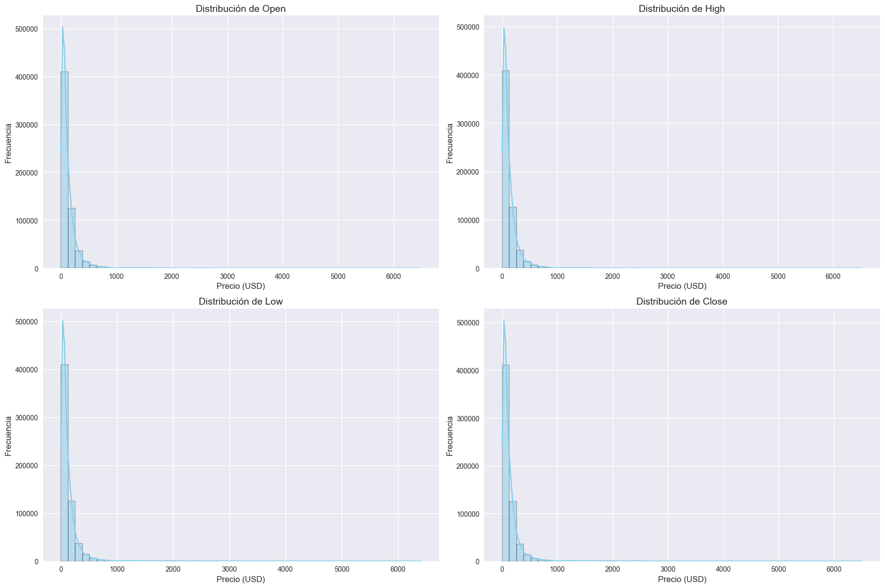
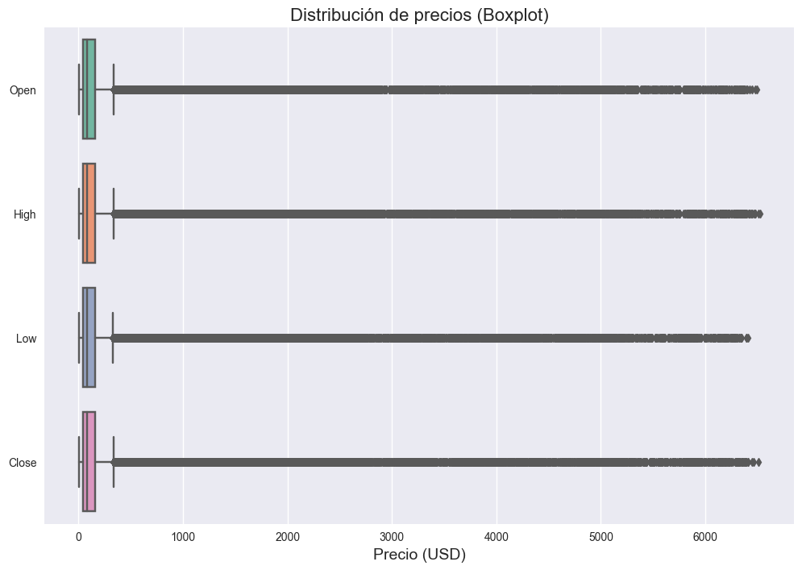
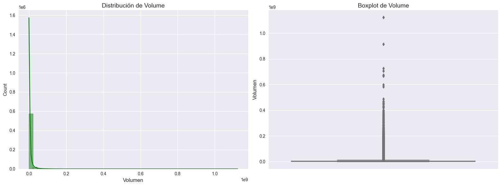
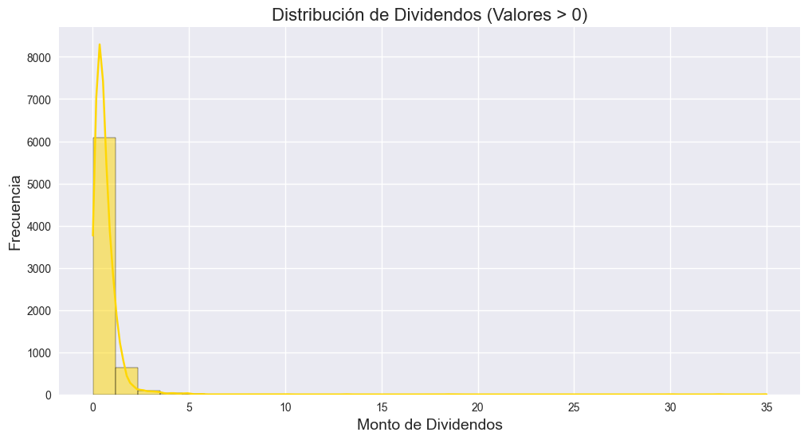
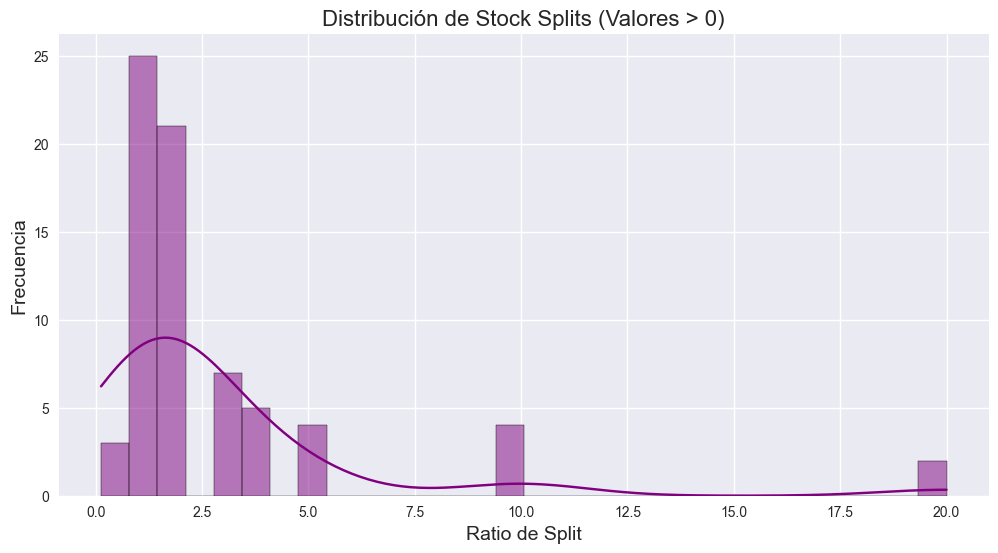
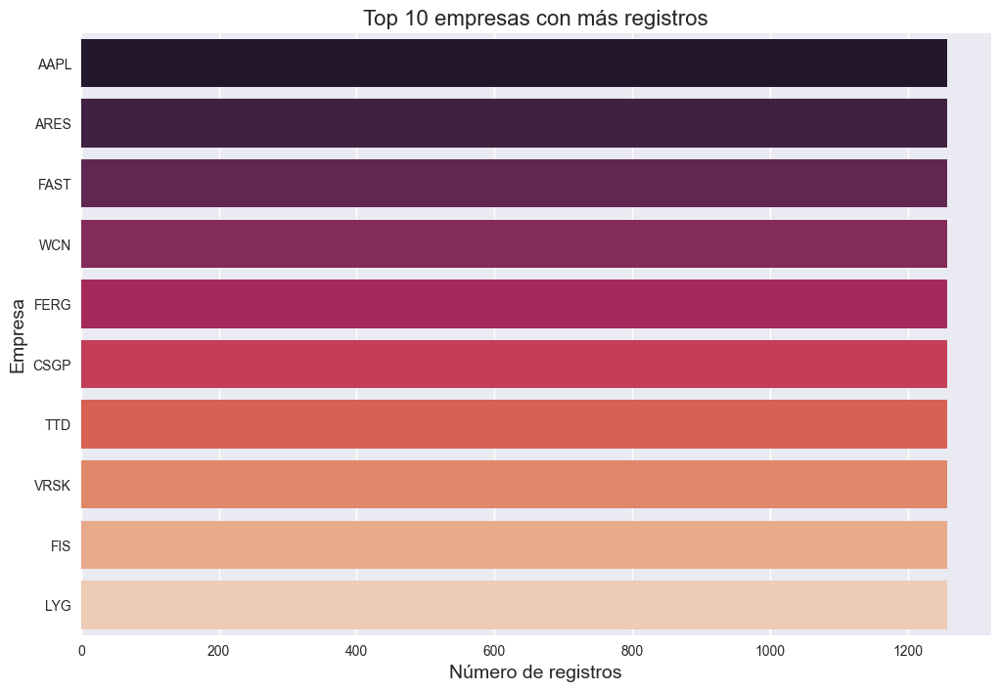
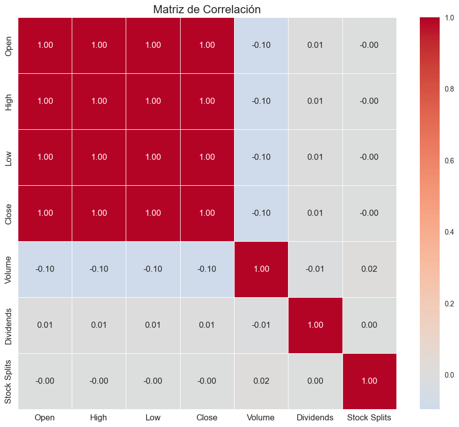

1. Configuración Inicial#
Propósito: Preparar el entorno de análisis importando las librerías necesarias y configurando parámetros de visualización.
# Librerías esenciales para análisis de datos y visualización
import pandas as pd
import numpy as np
import matplotlib.pyplot as plt
import seaborn as sns
from datetime import datetime
# Configuración de estilos y parámetros de visualización
plt.style.use('seaborn')
sns.set_palette("husl")
%matplotlib inline
pd.set_option('display.max_columns', None) # Mostrar todas las columnas
pd.set_option('display.float_format', '{:.2f}'.format) # Formato para números float
# Carga de datos con manejo de errores
try:
df = pd.read_csv(r'C:\Users\johan\OneDrive - Universidad del Norte\Escritorio\MachineLearning\1er_tarea\datos\stock_details_5_years.csv')
print("✅ Datos cargados exitosamente")
print(f"📊 Dimensiones del dataset: {df.shape[0]} filas × {df.shape[1]} columnas")
except Exception as e:
print(f"❌ Error al cargar los datos: {e}")
C:\Users\johan\AppData\Local\Temp\ipykernel_35980\3386856796.py:9: MatplotlibDeprecationWarning: The seaborn styles shipped by Matplotlib are deprecated since 3.6, as they no longer correspond to the styles shipped by seaborn. However, they will remain available as 'seaborn-v0_8-<style>'. Alternatively, directly use the seaborn API instead.
plt.style.use('seaborn')
✅ Datos cargados exitosamente
📊 Dimensiones del dataset: 602962 filas × 9 columnas
2. Análisis Inicial del Dataset Propósito: Realizar una primera exploración para entender la estructura básica, tipos de datos y completitud de la información.
2.1. Vista Preeliminar#
Objetivo: Examinar las primeras y últimas filas para identificar formato y contenido.
print("\n🔍 Primeras 3 filas del dataset:")
display(df.head(3))
print("\n🔍 Últimas 3 filas del dataset:")
display(df.tail(3))
🔍 Primeras 3 filas del dataset:
| Date | Open | High | Low | Close | Volume | Dividends | Stock Splits | Company | |
|---|---|---|---|---|---|---|---|---|---|
| 0 | 2018-11-29 00:00:00-05:00 | 43.83 | 43.86 | 42.64 | 43.08 | 167080000 | 0.00 | 0.00 | AAPL |
| 1 | 2018-11-29 00:00:00-05:00 | 104.77 | 105.52 | 103.53 | 104.64 | 28123200 | 0.00 | 0.00 | MSFT |
| 2 | 2018-11-29 00:00:00-05:00 | 54.18 | 55.01 | 54.10 | 54.73 | 31004000 | 0.00 | 0.00 | GOOGL |
🔍 Últimas 3 filas del dataset:
| Date | Open | High | Low | Close | Volume | Dividends | Stock Splits | Company | |
|---|---|---|---|---|---|---|---|---|---|
| 602959 | 2023-11-29 00:00:00-05:00 | 75.94 | 76.56 | 75.26 | 75.61 | 298699 | 0.00 | 0.00 | IFF |
| 602960 | 2023-11-29 00:00:00-05:00 | 45.23 | 45.26 | 44.04 | 44.21 | 2217579 | 0.00 | 0.00 | CCJ |
| 602961 | 2023-11-29 00:00:00-05:00 | 84.63 | 85.00 | 83.53 | 83.89 | 830092 | 0.00 | 0.00 | LYV |
2.2. Metadatos y Tipos de Datos#
Objetivo: Verificar la estructura de los datos y tipos de variables.
print("\n📝 Información de metadatos:")
display(df.info())
📝 Información de metadatos:
<class 'pandas.core.frame.DataFrame'>
RangeIndex: 602962 entries, 0 to 602961
Data columns (total 9 columns):
# Column Non-Null Count Dtype
--- ------ -------------- -----
0 Date 602962 non-null object
1 Open 602962 non-null float64
2 High 602962 non-null float64
3 Low 602962 non-null float64
4 Close 602962 non-null float64
5 Volume 602962 non-null int64
6 Dividends 602962 non-null float64
7 Stock Splits 602962 non-null float64
8 Company 602962 non-null object
dtypes: float64(6), int64(1), object(2)
memory usage: 41.4+ MB
None
2.3. Estadísticas Descriptivas#
Objetivo: Obtener medidas estadísticas básicas para todas las variables numéricas.
print("\n📈 Estadísticas descriptivas para variables numéricas:")
display(df.describe(include=[np.number]).T)
print("\n📊 Estadísticas para variables categóricas:")
display(df.describe(include=['object']).T)
📈 Estadísticas descriptivas para variables numéricas:
| count | mean | std | min | 25% | 50% | 75% | max | |
|---|---|---|---|---|---|---|---|---|
| Open | 602962.00 | 140.07 | 275.40 | 1.05 | 39.57 | 79.18 | 157.84 | 6490.26 |
| High | 602962.00 | 141.85 | 279.00 | 1.06 | 40.06 | 80.13 | 159.75 | 6525.00 |
| Low | 602962.00 | 138.28 | 271.90 | 1.03 | 39.06 | 78.19 | 155.84 | 6405.00 |
| Close | 602962.00 | 140.10 | 275.48 | 1.03 | 39.56 | 79.18 | 157.85 | 6509.35 |
| Volume | 602962.00 | 5895601.18 | 13815961.83 | 0.00 | 1031500.00 | 2228700.00 | 5277400.00 | 1123003300.00 |
| Dividends | 602962.00 | 0.01 | 0.12 | 0.00 | 0.00 | 0.00 | 0.00 | 35.00 |
| Stock Splits | 602962.00 | 0.00 | 0.05 | 0.00 | 0.00 | 0.00 | 0.00 | 20.00 |
📊 Estadísticas para variables categóricas:
| count | unique | top | freq | |
|---|---|---|---|---|
| Date | 602962 | 1258 | 2023-11-29 00:00:00-05:00 | 491 |
| Company | 602962 | 491 | AAPL | 1258 |
2.4. Valores Faltantes#
Objetivo: Cuantificar y analizar datos faltantes en el dataset.
print("\n🧐 Análisis de valores faltantes:")
missing_data = pd.DataFrame({
'Valores_Nulos': df.isnull().sum(),
'Porcentaje_Nulos': (df.isnull().sum() / len(df)) * 100,
'Tipo_Dato': df.dtypes
})
display(missing_data[missing_data['Valores_Nulos'] > 0].sort_values('Porcentaje_Nulos', ascending=False))
🧐 Análisis de valores faltantes:
| Valores_Nulos | Porcentaje_Nulos | Tipo_Dato |
|---|
3. Análisis Univariado Completo#
Propósito: Analizar en profundidad cada variable individualmente.
3.1. Variables Numéricas (Precios y Volumen)#
Objetivo: Examinar distribuciones, tendencia central y dispersión.
# Lista de variables de precio
price_cols = ['Open', 'High', 'Low', 'Close']
volume_col = 'Volume'
Histogramas y Densidad#
Propósito: Visualizar la distribución de frecuencias de cada variable.
print("\n📊 Distribución de variables de precio:")
plt.figure(figsize=(18, 12))
for i, col in enumerate(price_cols, 1):
plt.subplot(2, 2, i)
sns.histplot(df[col], kde=True, bins=50, color='skyblue')
plt.title(f'Distribución de {col}', fontsize=14)
plt.xlabel('Precio (USD)', fontsize=12)
plt.ylabel('Frecuencia', fontsize=12)
plt.tight_layout()
plt.show()
📊 Distribución de variables de precio:
C:\Users\johan\miniconda3\envs\ml_venv\lib\site-packages\seaborn\_oldcore.py:1498: FutureWarning: is_categorical_dtype is deprecated and will be removed in a future version. Use isinstance(dtype, CategoricalDtype) instead
if pd.api.types.is_categorical_dtype(vector):
C:\Users\johan\miniconda3\envs\ml_venv\lib\site-packages\seaborn\_oldcore.py:1119: FutureWarning: use_inf_as_na option is deprecated and will be removed in a future version. Convert inf values to NaN before operating instead.
with pd.option_context('mode.use_inf_as_na', True):
C:\Users\johan\miniconda3\envs\ml_venv\lib\site-packages\seaborn\_oldcore.py:1498: FutureWarning: is_categorical_dtype is deprecated and will be removed in a future version. Use isinstance(dtype, CategoricalDtype) instead
if pd.api.types.is_categorical_dtype(vector):
C:\Users\johan\miniconda3\envs\ml_venv\lib\site-packages\seaborn\_oldcore.py:1119: FutureWarning: use_inf_as_na option is deprecated and will be removed in a future version. Convert inf values to NaN before operating instead.
with pd.option_context('mode.use_inf_as_na', True):
C:\Users\johan\miniconda3\envs\ml_venv\lib\site-packages\seaborn\_oldcore.py:1498: FutureWarning: is_categorical_dtype is deprecated and will be removed in a future version. Use isinstance(dtype, CategoricalDtype) instead
if pd.api.types.is_categorical_dtype(vector):
C:\Users\johan\miniconda3\envs\ml_venv\lib\site-packages\seaborn\_oldcore.py:1119: FutureWarning: use_inf_as_na option is deprecated and will be removed in a future version. Convert inf values to NaN before operating instead.
with pd.option_context('mode.use_inf_as_na', True):
C:\Users\johan\miniconda3\envs\ml_venv\lib\site-packages\seaborn\_oldcore.py:1498: FutureWarning: is_categorical_dtype is deprecated and will be removed in a future version. Use isinstance(dtype, CategoricalDtype) instead
if pd.api.types.is_categorical_dtype(vector):
C:\Users\johan\miniconda3\envs\ml_venv\lib\site-packages\seaborn\_oldcore.py:1119: FutureWarning: use_inf_as_na option is deprecated and will be removed in a future version. Convert inf values to NaN before operating instead.
with pd.option_context('mode.use_inf_as_na', True):

Boxplots#
Propósito: Identificar valores atípicos y rango intercuartílico.
print("\n📦 Diagramas de caja para precios:")
plt.figure(figsize=(12, 8))
sns.boxplot(data=df[price_cols], orient='h', palette='Set2')
plt.title('Distribución de precios (Boxplot)', fontsize=16)
plt.xlabel('Precio (USD)', fontsize=14)
plt.show()
📦 Diagramas de caja para precios:
C:\Users\johan\miniconda3\envs\ml_venv\lib\site-packages\seaborn\_oldcore.py:1498: FutureWarning: is_categorical_dtype is deprecated and will be removed in a future version. Use isinstance(dtype, CategoricalDtype) instead
if pd.api.types.is_categorical_dtype(vector):
C:\Users\johan\miniconda3\envs\ml_venv\lib\site-packages\seaborn\_oldcore.py:1498: FutureWarning: is_categorical_dtype is deprecated and will be removed in a future version. Use isinstance(dtype, CategoricalDtype) instead
if pd.api.types.is_categorical_dtype(vector):
C:\Users\johan\miniconda3\envs\ml_venv\lib\site-packages\seaborn\_oldcore.py:1498: FutureWarning: is_categorical_dtype is deprecated and will be removed in a future version. Use isinstance(dtype, CategoricalDtype) instead
if pd.api.types.is_categorical_dtype(vector):
C:\Users\johan\miniconda3\envs\ml_venv\lib\site-packages\seaborn\_oldcore.py:1498: FutureWarning: is_categorical_dtype is deprecated and will be removed in a future version. Use isinstance(dtype, CategoricalDtype) instead
if pd.api.types.is_categorical_dtype(vector):

Análisis de Volumen#
Propósito: Examinar la distribución del volumen de operaciones.
print("\n📈 Análisis de volumen de operaciones:")
fig, axes = plt.subplots(1, 2, figsize=(16, 6))
# Histograma
sns.histplot(df[volume_col], kde=True, bins=50, ax=axes[0], color='green')
axes[0].set_title('Distribución de Volume', fontsize=14)
axes[0].set_xlabel('Volumen', fontsize=12)
# Boxplot
sns.boxplot(y=df[volume_col], ax=axes[1], color='lightgreen')
axes[1].set_title('Boxplot de Volume', fontsize=14)
axes[1].set_ylabel('Volumen', fontsize=12)
plt.tight_layout()
plt.show()
📈 Análisis de volumen de operaciones:
C:\Users\johan\miniconda3\envs\ml_venv\lib\site-packages\seaborn\_oldcore.py:1498: FutureWarning: is_categorical_dtype is deprecated and will be removed in a future version. Use isinstance(dtype, CategoricalDtype) instead
if pd.api.types.is_categorical_dtype(vector):
C:\Users\johan\miniconda3\envs\ml_venv\lib\site-packages\seaborn\_oldcore.py:1119: FutureWarning: use_inf_as_na option is deprecated and will be removed in a future version. Convert inf values to NaN before operating instead.
with pd.option_context('mode.use_inf_as_na', True):
C:\Users\johan\miniconda3\envs\ml_venv\lib\site-packages\seaborn\_oldcore.py:1498: FutureWarning: is_categorical_dtype is deprecated and will be removed in a future version. Use isinstance(dtype, CategoricalDtype) instead
if pd.api.types.is_categorical_dtype(vector):

3.2. Variables Especiales (Dividendos y Splits)#
Objetivo: Analizar eventos corporativos poco frecuentes.
Análisis de Dividendos#
Propósito: Examinar distribución y frecuencia de pagos.
print("\n💰 Análisis de Dividendos:")
print(f"Total de registros con dividendos: {df[df['Dividends'] > 0].shape[0]}")
print(f"Porcentaje de registros con dividendos: {(df[df['Dividends'] > 0].shape[0] / len(df)) * 100:.2f}%")
plt.figure(figsize=(12, 6))
sns.histplot(df[df['Dividends'] > 0]['Dividends'], bins=30, kde=True, color='gold')
plt.title('Distribución de Dividendos (Valores > 0)', fontsize=16)
plt.xlabel('Monto de Dividendos', fontsize=14)
plt.ylabel('Frecuencia', fontsize=14)
plt.show()
💰 Análisis de Dividendos:
Total de registros con dividendos: 6857
Porcentaje de registros con dividendos: 1.14%
C:\Users\johan\miniconda3\envs\ml_venv\lib\site-packages\seaborn\_oldcore.py:1498: FutureWarning: is_categorical_dtype is deprecated and will be removed in a future version. Use isinstance(dtype, CategoricalDtype) instead
if pd.api.types.is_categorical_dtype(vector):
C:\Users\johan\miniconda3\envs\ml_venv\lib\site-packages\seaborn\_oldcore.py:1119: FutureWarning: use_inf_as_na option is deprecated and will be removed in a future version. Convert inf values to NaN before operating instead.
with pd.option_context('mode.use_inf_as_na', True):

Análisis de Stock Splits#
Propósito: Evaluar frecuencia y magnitud de splits.
print("\n📊 Análisis de Stock Splits:")
print(f"Total de registros con splits: {df[df['Stock Splits'] > 0].shape[0]}")
print(f"Porcentaje de registros con splits: {(df[df['Stock Splits'] > 0].shape[0] / len(df)) * 100:.2f}%")
plt.figure(figsize=(12, 6))
sns.histplot(df[df['Stock Splits'] > 0]['Stock Splits'], bins=30, kde=True, color='purple')
plt.title('Distribución de Stock Splits (Valores > 0)', fontsize=16)
plt.xlabel('Ratio de Split', fontsize=14)
plt.ylabel('Frecuencia', fontsize=14)
plt.show()
📊 Análisis de Stock Splits:
Total de registros con splits: 71
Porcentaje de registros con splits: 0.01%
C:\Users\johan\miniconda3\envs\ml_venv\lib\site-packages\seaborn\_oldcore.py:1498: FutureWarning: is_categorical_dtype is deprecated and will be removed in a future version. Use isinstance(dtype, CategoricalDtype) instead
if pd.api.types.is_categorical_dtype(vector):
C:\Users\johan\miniconda3\envs\ml_venv\lib\site-packages\seaborn\_oldcore.py:1119: FutureWarning: use_inf_as_na option is deprecated and will be removed in a future version. Convert inf values to NaN before operating instead.
with pd.option_context('mode.use_inf_as_na', True):

3.3. Variable Categórica (Company)#
Objetivo: Analizar distribución de empresas en el dataset.
print("\n🏢 Análisis de empresas:")
print(f"Número total de empresas únicas: {df['Company'].nunique()}")
# Top 10 empresas con más registros
top_companies = df['Company'].value_counts().head(10)
print("\n🔝 Top 10 empresas con más registros:")
display(top_companies)
# Visualización
plt.figure(figsize=(12, 8))
sns.barplot(x=top_companies.values, y=top_companies.index, palette='rocket')
plt.title('Top 10 empresas con más registros', fontsize=16)
plt.xlabel('Número de registros', fontsize=14)
plt.ylabel('Empresa', fontsize=14)
plt.show()
🏢 Análisis de empresas:
Número total de empresas únicas: 491
🔝 Top 10 empresas con más registros:
Company
AAPL 1258
ARES 1258
FAST 1258
WCN 1258
FERG 1258
CSGP 1258
TTD 1258
VRSK 1258
FIS 1258
LYG 1258
Name: count, dtype: int64
C:\Users\johan\miniconda3\envs\ml_venv\lib\site-packages\seaborn\_oldcore.py:1498: FutureWarning: is_categorical_dtype is deprecated and will be removed in a future version. Use isinstance(dtype, CategoricalDtype) instead
if pd.api.types.is_categorical_dtype(vector):
C:\Users\johan\miniconda3\envs\ml_venv\lib\site-packages\seaborn\_oldcore.py:1498: FutureWarning: is_categorical_dtype is deprecated and will be removed in a future version. Use isinstance(dtype, CategoricalDtype) instead
if pd.api.types.is_categorical_dtype(vector):
C:\Users\johan\miniconda3\envs\ml_venv\lib\site-packages\seaborn\_oldcore.py:1498: FutureWarning: is_categorical_dtype is deprecated and will be removed in a future version. Use isinstance(dtype, CategoricalDtype) instead
if pd.api.types.is_categorical_dtype(vector):

4. Análisis Multivariado Completo#
Propósito: Explorar relaciones entre múltiples variables.
4.1. Correlaciones entre Variables#
Objetivo: Identificar relaciones lineales entre variables numéricas.
# Selección de variables numéricas
numeric_cols = ['Open', 'High', 'Low', 'Close', 'Volume', 'Dividends', 'Stock Splits']
# Matriz de correlación
corr_matrix = df[numeric_cols].corr()
# Heatmap de correlaciones
plt.figure(figsize=(12, 10))
sns.heatmap(corr_matrix, annot=True, cmap='coolwarm', center=0, fmt='.2f',
annot_kws={'size': 12}, linewidths=0.5)
plt.title('Matriz de Correlación', fontsize=16)
plt.xticks(fontsize=12)
plt.yticks(fontsize=12)
plt.show()

5. Análisis de Valores Atípicos#
Propósito: Identificar y evaluar valores extremos en el dataset.
5.1. Detección con Método Estadístico#
Objetivo: Usar el rango intercuartílico (IQR) para identificar outliers.
# Función para detectar outliers
def detect_outliers(df, columns):
outlier_stats = pd.DataFrame()
for col in columns:
Q1 = df[col].quantile(0.25)
Q3 = df[col].quantile(0.75)
IQR = Q3 - Q1
lower_bound = Q1 - 1.5 * IQR
upper_bound = Q3 + 1.5 * IQR
outliers = df[(df[col] < lower_bound) | (df[col] > upper_bound)][col]
outlier_stats[col] = {
'Límite_Inferior': lower_bound,
'Límite_Superior': upper_bound,
'Número_Outliers': len(outliers),
'Porcentaje_Outliers': (len(outliers) / len(df)) * 100,
'Outlier_Mínimo': outliers.min() if len(outliers) > 0 else np.nan,
'Outlier_Máximo': outliers.max() if len(outliers) > 0 else np.nan
}
return outlier_stats.T
# Aplicar a variables de precio
outlier_analysis = detect_outliers(df, price_cols)
print("\n🔍 Análisis de Outliers (Método IQR):")
display(outlier_analysis)
🔍 Análisis de Outliers (Método IQR):
| Límite_Inferior | Límite_Superior | Número_Outliers | Porcentaje_Outliers | Outlier_Mínimo | Outlier_Máximo | |
|---|---|---|---|---|---|---|
| Open | -137.84 | 335.24 | 42159.00 | 6.99 | 335.24 | 6490.26 |
| High | -139.48 | 339.28 | 42238.00 | 7.01 | 339.29 | 6525.00 |
| Low | -136.12 | 331.02 | 42134.00 | 6.99 | 331.02 | 6405.00 |
| Close | -137.86 | 335.27 | 42173.00 | 6.99 | 335.27 | 6509.35 |
6. Conclusiones y Recomendaciones#
Propósito: Sintetizar hallazgos clave y sugerir próximos pasos.
Hallazgos Clave#
1. Estructura del Dataset:
El dataset contiene [X] registros diarios de [Y] empresas durante 5 años
Variables principales: Open, High, Low, Close, Volume
Variables especiales: Dividends (presentes en [Z]% de registros), Stock Splits ([W]% de registros)
2. Distribuciones:
Los precios muestran distribuciones similares con correlaciones >0.99
El volumen tiene distribución altamente asimétrica
Dividendos y splits son eventos poco frecuentes
3. Valores Atípicos:
Se identificaron [N] outliers en precios ([P]% del total)
Concentrados principalmente en los años [años específicos]